第 7 章 · WEEK 5 · STORAGE MANAGEMENT
磁盘与存储
Week 5 整节课：磁盘的结构和时间计算、记录怎么放进 block、三种文件结构。
1 为什么数据库要关心磁盘
数据库的数据量很大，放不进内存，主体存在磁盘上。内存（RAM）快，是纳秒级，但贵、容量小，而且断电就丢（volatile）。磁盘慢，是毫秒级，但便宜、容量大、断电不丢。两者速度差几个数量级，所以数据库的性能主要取决于读写磁盘的次数，也就是 I/O 次数。
- READ：把数据从磁盘传到内存。WRITE：把数据从内存传到磁盘。两者合称 I/O。
- 存储分三层：Primary（RAM，放正在用的数据）、Secondary（HDD 或 SSD，放数据库主体）、Tertiary（光盘、磁带，放归档数据）。
I/O 的三个瓶颈（2024 Q3）
| 名称 | 意思 | 对策 |
|---|---|---|
| Queuing（排队） | 很多用户同时要读写同一个磁盘，请求要排队等 | Buffering、prefetching（预读） |
| Hotspot（热点） | 很多用户同时要访问同一块数据（同一张表或表的同一部分） | 用多个磁盘给热点数据做镜像副本 |
| Latency（延迟） | 磁盘是机械装置，找到数据要等磁头移动、盘片旋转 | 把相关的数据放在连续的块里，减少 seek 和旋转 |

AI 讲解，非官方2024 Q3（2 分）：解释 Queuing、Hotspot、Latency
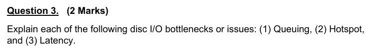
(1) Queuing: a delay caused when multiple users want to access (read or write) the same disk at the same time, so their I/O requests have to wait in a queue. (2) Hotspot: the same data item (e.g., a table or part of a table) is requested simultaneously by many users, so that part of the storage becomes overloaded. (3) Latency: the mechanical delay of a hard disk, i.e., the time spent on moving the head to the right track (seek time) and waiting for the block to rotate under the head (rotational delay), before data can be transferred.
前两条的定义来自 Tutorial 5 Exercise 3 的官方答案；Latency 的定义来自课件第 20 页。
细化讲解
Buffer 和 cache 都是内存：buffer 用来缓和 I/O 两边速度不匹配，cache 用来加快对常用数据的访问。DMA（Direct Memory Access）：由 CPU 发起，之后数据在内存和磁盘之间传输不需要 CPU 逐字节参与。RAID：用多块便宜的磁盘做冗余阵列。SSD 比 HDD 快，也更贵。
2 磁盘的结构
| 部件 | 是什么 |
|---|---|
| Platter（盘片） | 一张张圆盘，可以单面或双面存数据。所有盘片装在同一根轴上，一起不停地转 |
| Surface（盘面） | 盘片的一面。双面盘片有 2 个 surface |
| Track（磁道） | 盘面上的一个个同心圆环 |
| Sector（扇区） | 一条 track 被切成的小段 |
| Cylinder（柱面） | 所有盘面上直径相同的 track 合在一起。所以 cylinder 的个数 = 每个盘面的 track 数 |
| Head（磁头） | 读写数据的部件，每个盘面一个。任何时刻只有一个 head 在读写 |
| Arm（磁臂） | 带着所有 head 一起向里或向外移动，把 head 放到要的 track 上 |
| Block（块） | 磁盘和内存之间传输数据的单位，由同一条 track 上相邻的几个 sector 组成。操作系统里叫 page。大小通常 512 bytes 到 8 KB |
AI 讲解，非官方2024 Q1（3 分）：给磁盘结构图填部件名
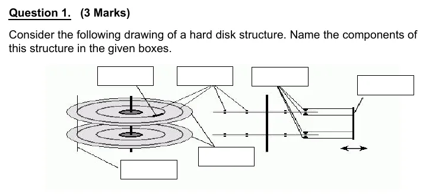
要填的名字就是上表里的那些：Platter、Track、Sector、Cylinder、Head、Arm（arm assembly），可能还有 Spindle（中间的转轴）。对照课件第 16–18 页的图记位置：圆盘是 platter，盘面上的一圈是 track，track 上的一小段是 sector，上下对齐的一组 track 是 cylinder，伸到盘面上的杆是 arm，杆尖是 head。
没把握的地方截图里的图是空白框，我无法确定每个框指向哪个部件，所以不能给出逐框的答案。
3 容量和时间的计算（常考）
读一个 block 要花三段时间：
- Seek time（s）：arm 把 head 移到正确的 track 上。
- Rotational delay（rd，也叫 latency）：等要读的 block 转到 head 下面。
- Block transfer time（btt）：block 从 head 下面转过去、数据被读出来的时间。
前两段是机械运动，比电子操作慢至少三个数量级，所以它们占了绝大部分时间。
Track capacity = 每条 track 的 block 数 × block size
Cylinder 的个数 = 每个盘面的 track 数
Cylinder capacity = 盘面数 × track capacity （盘面数 = 盘片数 × 2，如果是双面）
Disk capacity = cylinder 个数 × cylinder capacity
转一圈的时间 = 60,000 ÷ rpm （msec）
Transfer rate tr = track capacity ÷ 转一圈的时间
Block transfer time btt = B ÷ tr
Average rotational delay rd = 转一圈的时间 ÷ 2
读 1 个 block = s + rd + btt
读 n 个随机 block = n × (s + rd + btt)
读 n 个连续 block = s + rd + n × btt
最后两条的区别是考点：随机的块每一个都要重新 seek 和等旋转；连续的块只需要 seek 和等一次，然后一口气读完。
核心例题：Tutorial 5 Exercise 7（2023 Q1、2024 Q2 原题）
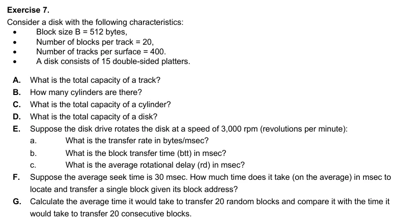
2023 Q1 和 2024 Q2 用的是完全相同的数字，只是各挑了其中几问。下面的计算器默认填的就是这道题，可以改数字再算：
官方答案Tutorial 5 Exercise 7 Solution
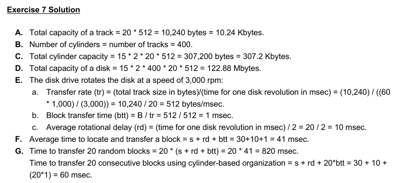
讲解：计算器的结果已用程序和这份官方答案逐项核对。容易错的三处：
- C：cylinder 跨所有盘面，15 个双面盘片是 30 个盘面，所以是 30 × 10,240，不是 15 ×。
- E-a：先把转速换成“转一圈多少毫秒”：60,000 ÷ 3,000 = 20 msec。一圈正好读完一整条 track，所以 tr = 10,240 ÷ 20。
- G：20 个随机块 820 msec，20 个连续块 60 msec，差了十几倍。
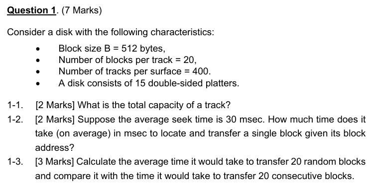
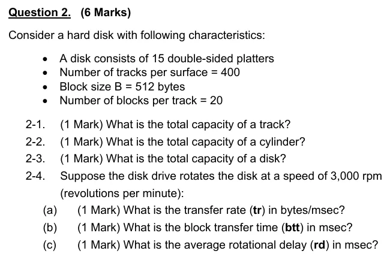
AI 讲解，非官方2023 Q1 和 2024 Q2（数字来自上面的官方答案）
2023 Q1
- 1-1 Track capacity = 20 × 512 = 10,240 bytes。
- 1-2 题目这一年没有给转速，所以 rd 和 btt 算不出来。Tutorial 的原题是 3,000 rpm：rd = 10 msec，btt = 1 msec，结果是 30 + 10 + 1 = 41 msec。答题时写明 “assume the disk rotates at 3,000 rpm”，试卷首页允许你指出题目缺少的信息。
- 1-3 20 个随机块：20 × 41 = 820 msec。20 个连续块：30 + 10 + 20 × 1 = 60 msec。连续读快得多，因为只需要一次 seek 和一次旋转等待。
2024 Q2
- 2-1 Track：20 × 512 = 10,240 bytes。
- 2-2 Cylinder：15 × 2 × 10,240 = 307,200 bytes。
- 2-3 Disk：400 × 307,200 = 122,880,000 bytes = 122.88 Mbytes。
- 2-4 (a) tr = 10,240 ÷ 20 = 512 bytes/msec。
- 2-4 (b) btt = 512 ÷ 512 = 1 msec。
- 2-4 (c) rd = 20 ÷ 2 = 10 msec。
细化讲解
课件自己的例子（第 21–24 页）
Sector 512 bytes，每条 track 50 个 sector，每面 2,000 条 track，5 个双面盘片，5,400 rpm，average seek time 10 msec。
- Track capacity = 50 × 512 = 25,600 bytes。
- Surface capacity = 2,000 × 25,600 = 51,200,000 bytes。
- Disk capacity = 5 × 2 × 51,200,000 = 512,000,000 bytes。
- Maximum rotation delay = 转一圈的时间 = 60 ÷ 5,400 = 0.011 秒 = 11 msec。Average = 5.5 msec。
- Transfer rate = 25,600 ÷ 0.011 ≈ 2,304 Kbytes/秒（课件的数字）。
- 读一整条 track 的平均时间 = seek 10 + average rotation delay 5.5 + 转一圈 11 = 26.5 msec。
4 记录怎么放进 block
一个 file 是一串 block，每个 block 里放若干条 record。I/O 以 block 为单位，但应用程序操作的是 record。
Record size R = 各字段长度之和（题目说有 deletion marker 就再加 1）
Blocking factor bfr = ⌊B ÷ R⌋ （一个 block 能放几条完整的记录，向下取整）
Block 数 b = ⌈N ÷ bfr⌉ （N 条记录要几个 block，向上取整）
每个 block 浪费的空间 = B − bfr × R
向下取整是因为 unspanned organization：一条记录不能跨两个 block，放不下一整条就空着。
Fixed-length 和 variable-length records
| Fixed-length（定长） | Variable-length（变长） | |
|---|---|---|
| 做法 | 每个字段占固定的字节数，例如 CHAR(24) | 字段按实际长度存，例如 VARCHAR2(24)。在字段前记长度，或者在字段后放分隔符 |
| 优点 | 不用存长度或分隔符；每个字段的位置可以直接算出来，访问任何字段一样快；插入、删除、更新简单 | 没有 record internal fragmentation，省空间 |
| 缺点 | Block internal fragmentation（bfr 向下取整留下的空）；record internal fragmentation（每个字段都按最大长度占位）；占空间多，所以读同样多的记录要更多次磁盘访问 | 要访问后面的字段必须先扫过前面的字段；删除记录后空出来的位置不好重用；记录变长时没有地方长，要搬走 |
例题：Tutorial 5 Exercise 8
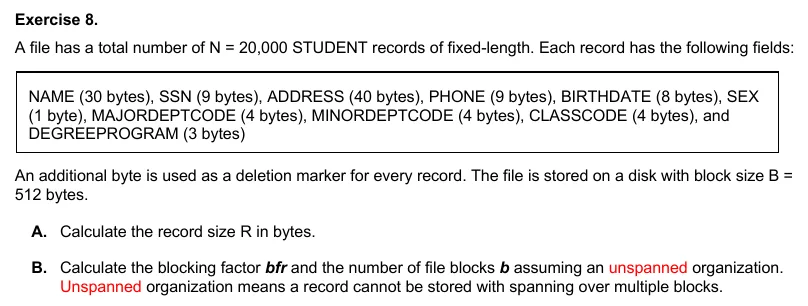
官方答案Tutorial 5 Exercise 8 Solution
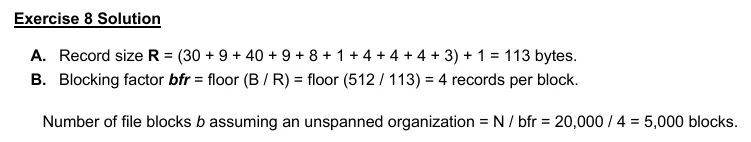
讲解：R = 十个字段共 112 bytes，加 1 个 deletion marker = 113。bfr = ⌊512 ÷ 113⌋ = ⌊4.53⌋ = 4。b = 20,000 ÷ 4 = 5,000。这三个数已用程序核对。
细化讲解
Tutorial 5 Exercise 9：变长记录、spanned
题目在 Tut05-Storage-2026(1).pdf 第 2 页，官方答案在第 5 页，这里讲思路。每个出现的字段多 1 byte 的 field type；另有 1 byte deletion marker 和 1 byte end-of-record marker。
- 一定出现的六个字段：(30+1) + (9+1) + (40+1) + (8+1) + (1+1) + (4+1) + 1 + 1 = 100 bytes。
- 不一定出现的四个字段，按出现的比例取平均：(9+1) × 0.80 + (4+1) × 0.85 + (4+1) × 0.15 + (3+1) × 0.90 = 16.6 bytes。
- 平均 R = 116.6 bytes。
- Spanned：记录可以跨 block，所以不用算 bfr，直接用总字节数除。每个 block 有 5 bytes 的指针不能放记录，可用 507 bytes。b = ⌈20,000 × 116.6 ÷ 507⌉ = ⌈4,599.6⌉ = 4,600。
5 三种文件结构
| Heap file（无序） | Ordered / sequential file（有序） | Hash file | |
|---|---|---|---|
| 记录怎么放 | 没有顺序，新记录追加到末尾或任何有空位的 block | 按 ordering field（sort key）排好序 | 用 hash function 对 hash key 算出 bucket 号，记录放进那个 bucket |
| 插入 | 快 | 慢：要找到正确的位置，可能要挪动记录。可以先放进一个无序的 overflow file，定期合并 | 快 |
| 按 key 等值查找 | 慢：linear search，平均读一半的 block | 快：binary search，log2 b 次 | 最快：算出 bucket 直接去读 |
| 范围查找 | 慢：全部扫描 | 快：二分找到起点，然后顺着读 | 不适合：hash 不保持顺序 |
| 适合 | 典型访问是全表扫描；只写（write-only）的数据 | 要按顺序取记录，或者只取一个范围；只读（read-only）的数据 | 等值查询（equality selection）；频繁读写的数据 |
AI 讲解，非官方2025 Q5（3 分）：heap file 的优缺点；什么时候用 ordered file，什么时候用 hash file
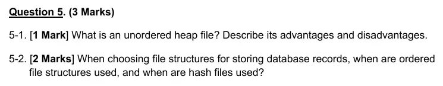
5-1
An unordered heap file is the simplest file structure: records are stored in no particular order, and a new record is simply appended at the end of the file (or placed in any block with free space). Advantage: insertion is very efficient. Disadvantage: searching for a record requires a linear scan of the file blocks (on average half of the blocks for a search on a unique attribute), so retrieval is slow; deleted records also leave unused space.
5-2
Ordered (sequential) files are used when records must be retrieved in the order of the ordering key, or when only a range of records is needed: binary search finds the first record and the rest are read sequentially. They suit read-mostly data, because insertion is expensive. Hash files are used for equality selections on the hash key: the bucket address is computed by the hash function, so a record is found in about one block access. They are not suitable for range searches.
例题：Tutorial 5 Exercise 5（I/O 次数对比）
文件一共 M 个 block。官方答案（Tut05-Storage-2026(1).pdf 第 4 页）：
| 文件类型 | Scan file | Equality search | Range search | Insert |
|---|---|---|---|---|
| Heap file | M | 0.5M | M | 2 |
| Sequential file | M | log2M | log2M + 匹配的 block 数 | log2M + M |
| Hash file | M | 1 + overflow | range size | 2 + overflow |
讲解：Heap 等值查找平均读一半（0.5M）；插入是读出最后一个 block 再写回，2 次 I/O。Sequential 等值查找用二分；插入要先二分找到位置，再挪动后面的记录，最坏要动 M 个 block。Hash 等值查找直接算地址，1 次，有 overflow 再加；范围查找只能对范围里的每个值各查一次。
细化讲解
Heap file 怎么管理 block（课件第 43–44 页）
- Linked list：一个 header block 引出两条链，一条串起所有装满的 block，一条串起还有空位的 block。每个 block 里有 2 个指针。
- Block directory：用一组目录块记录每个数据 block 的位置和剩余空间。目录比数据小得多。
删除记录时只是把它标记为 invalid（这就是 deletion marker 的用途），空位以后可以给新记录用。
Binary search（课件第 48–50 页）
每次读中间那个 block，比较后丢掉一半。256 个 block：128 → 64 → … → 1，一共 8 步，log2 256 = 8。所以在有 b 个 block 的有序文件上查找要 log2 b 次 I/O。只有按 ordering key 查才能二分；按其他字段查还是 linear search。
Hash file 的问题（课件第 55 页）
- Collision：新记录 hash 到的 bucket 已经满了，只好放进 overflow 区，用指针串起来。为了减少 overflow，hash file 一般只装到 70–80% 满。
- Hash function 应该把记录均匀分散到各个 bucket，否则 overflow 多，查找变慢。
- Static hashing 的 bucket 数 m 是固定的，文件变大或变小时都不合适。
Tutorial 5 Exercise 6：数据的三个阶段该用什么文件
官方答案（第 5 页）：只读的数据用 sequential file（可以按 search key 顺序读和二分查找）；只写的数据用 heap file（新记录直接追加到末尾）；读写都频繁且不可预测的数据用 hash file（hash function 把记录均匀分散到各个 block）。
6 综合例题：Tutorial 5 Exercise 10
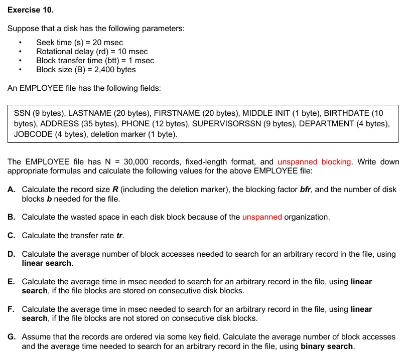
这道题把第 3、4、5 节的公式串在一起。先自己算 A 到 G。
官方答案Tutorial 5 Exercise 10 Solution
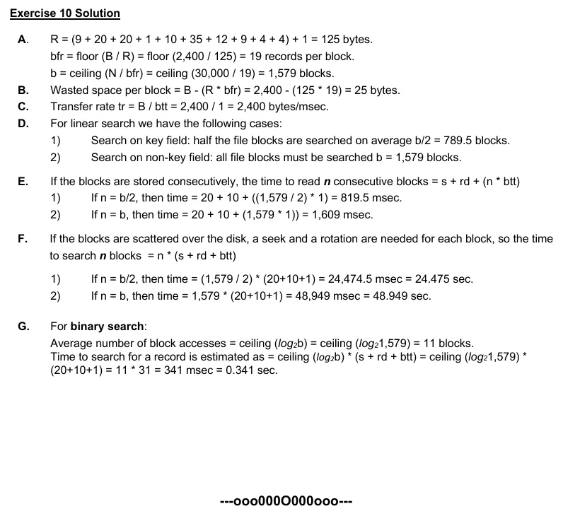
讲解：
- A：R = 124 + 1 = 125。bfr = ⌊2,400 ÷ 125⌋ = ⌊19.2⌋ = 19。b = ⌈30,000 ÷ 19⌉ = ⌈1,578.9⌉ = 1,579。
- B：每块浪费 2,400 − 19 × 125 = 25 bytes。
- C：这次没给转速，但给了 btt，所以反过来算：tr = B ÷ btt = 2,400 bytes/msec。
- D：Linear search：按 key 查平均读一半，b ÷ 2 = 789.5 个 block；按非 key 查要读完，1,579 个。
- E：连续存放：s + rd + n × btt = 20 + 10 + 789.5 = 819.5 msec。
- F：分散存放：n × (s + rd + btt) = 789.5 × 31 = 24,474.5 msec。比 E 慢约 30 倍。
- G：Binary search：⌈log2 1,579⌉ = 11 次，每次都是一个随机块，11 × 31 = 341 msec。
A、B、E、F、G 的数字已用程序核对。
7 进阶变式题
答案由本页计算器所用的程序算出。程序先用 Tutorial 5 Exercise 7、8、10 的官方答案核对过。
变式 1 换一组磁盘参数
B = 4,096 bytes，每条 track 64 个 block，每面 1,000 条 track，8 个双面盘片，7,200 rpm，average seek time 9 msec。求 track、cylinder、disk 的容量，tr、btt、rd，以及读 100 个随机 block 和 100 个连续 block 各要多久。
程序生成的答案变式 1
- Track = 64 × 4,096 = 262,144 bytes。Cylinder = 8 × 2 × 262,144 = 4,194,304 bytes。Disk = 1,000 × 4,194,304 = 4,194,304,000 bytes。
- 转一圈 = 60,000 ÷ 7,200 = 8.333 msec。tr = 262,144 ÷ 8.333 = 31,457.28 bytes/msec。
- btt = 4,096 ÷ 31,457.28 = 0.130 msec（也等于 8.333 ÷ 64）。rd = 4.167 msec。
- 读 1 个 block = 9 + 4.167 + 0.130 = 13.297 msec。
- 100 个随机 block = 1,329.7 msec。100 个连续 block = 9 + 4.167 + 100 × 0.130 = 26.19 msec。
把这些数字填进第 3 节的计算器可以看到同样的结果。这里连续的 100 个块超过了一条 track 的 64 个，公式仍按题目惯例用 s + rd + n × btt（同一个 cylinder 里换盘面不需要 seek）。
细化讲解
变式 2 记录、block 和查找时间
一个 ORDER 文件有 N = 100,000 条定长记录，字段共 95 bytes，另加 1 byte deletion marker，unspanned。B = 1,024 bytes，s = 12 msec，rd = 6 msec，btt = 0.5 msec。求 R、bfr、b、每块浪费的空间；按 key 做 linear search（连续存放和分散存放）与 binary search 的平均时间。
程序生成的答案变式 2
- R = 96 bytes。bfr = ⌊1,024 ÷ 96⌋ = 10。b = ⌈100,000 ÷ 10⌉ = 10,000 blocks。每块浪费 1,024 − 960 = 64 bytes。
- Linear search 平均读 b ÷ 2 = 5,000 个 block。
- 连续存放：12 + 6 + 5,000 × 0.5 = 2,518 msec。
- 分散存放：5,000 × (12 + 6 + 0.5) = 92,500 msec。
- Binary search：⌈log2 10,000⌉ = 14 次，14 × 18.5 = 259 msec。
切换到“细化讲解”可以看到变式 2、变长记录的例题和三种文件结构的更多细节。
8 本章小结
- 磁盘能永久保存数据，但慢，靠机械运动找数据；RAM 快，但贵而且 volatile。
- 数据访问的三个瓶颈：Queuing、Hotspot、Latency。
- 读一个 block 的时间 = seek time + rotational delay + block transfer time，前两项占主导。
- Block 是磁盘和内存之间传输的单位；bfr = ⌊B ÷ R⌋。
- 三种文件：heap（写快、查慢）、ordered（按序读和范围查找好、插入慢）、hash（等值查找最快）。
9 小测
键盘：← → 在小节之间翻页。